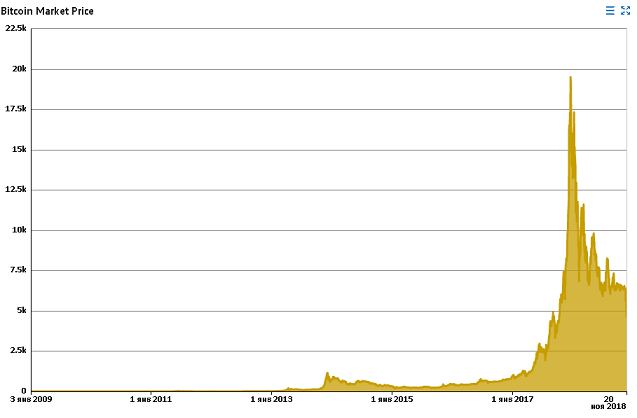

ВРЕМЯ ПОКУПАТЬ?
Падение биткоина: заговор Большого Бизнеса и скоро все будет хорошо?
21 ноября 2018 16:34 November 21, 2018.
Приключения биткоина на американских горках неизбежно привлекли к себе внимание как разномастных аналитиков, запустивших увлекательное соревнование по попаданию пальцем в небо, так и любителей теории заговора. Специально для вас мы нашли и перевели показательный текст с Reddit за авторством криптотрейдера scotto8888 (предположительно, его зовут Скотт Томсон, но это вряд ли кому-то что-то скажет). С жизнеутверждающим финалом!
Мы не обязательно разделяет мнение автора, мы даже не знаем, кто это, текст приведен в ознакомительных целях.
.
Пару слов о Bakkt...
Мне только что пришла в голову мысль и стало интересно, что все остальные об этом думают.
Многие, включая меня, считают очень-очень странным, что биткоин падает в тот момент, когда Bakkt вот-вот заработает.
Мы также знаем, что деньги институциональных инвесторов уже пришли. Если вы посмотрите на графики, то станет более чем очевидно - они уже присутствуют на рынке гораздо дольше, чем думает большинство.
А как они это делают? Искусственно занижают цены, а потом их так же раздувают до небес. И делают это снова и снова. Циклы, как говорят профессионалы.
Теперь, как добиться массового использования конкретно биткоина? Да кто его знает… У каждого есть какая-то криптовалюта с собственной траекторией ее освоения пользователями, но что происходит в случае с биткоином? Многие будут доказывать, что биткоин рано или поздно умрет, потому что он нецелесообразен как валюта. Но что, если биткоин фактически станет средством сохранения стоимости вроде золота?
Как бы это реализовали институциональные инвесторы?
Задумайтесь, сперва Bakkt, а теперь этот обвал цен. Только представьте, что вам 50 лет, и все, что вы знаете о биткоине (если вообще что-то знаете) — это то, что он взлетел до астрономических высот, и что на этом погорело огромное количество людей, страдающих синдромом упущенной выгоды. Фактором доверия в случае с розничными инвесторами можно, в общем и целом, пренебречь. Но скоро биткоин будет доступен широким массам, которые смогут направить в него свои пенсионные накопления и черт знает что еще.
А что вы будете делать как институциональный инвестор, если вам хочется заработать кучу денег? Не только вернуть людям веру в биткоин, но и попутно заработать тонны денег?
ПЕРЕЗАПУСТИТЬ ВСЮ СИСТЕМУ.
Многие профессионалы сказали бы, что актив, цена которого изменяется по параболе, почти всегда возвращается в точку прорыва. Можно вести споры на тему того, в какой из тысячи различных точек биткоин совершил «технический» прорыв, но дело не в этом.
1.Уничтожить биткоин, чтобы все слабаки от него избавились. Не просто некоторые, а ВСЕ.
2.Опустить его стоимость до такого уровня, где каждый смог бы купить его на любую сумму и остаться по итогу довольным.
3.Познакомить широкую публику с биткоином через такие платформы, как … Bakkt.
4.Дать цене начать снова расти, что в итоге должно запустить новый виток движения по параболе.
Мы все знаем, что традиционные рынки сейчас падают, и это мой второй тезис.
Что если криптовалюты не только получат широкое распространение в ближайшие годы, а станут новым фондовым рынком версии 2.0?
Если задуматься, «киты» на фондовом рынке зарабатывают копейки в сравнении с тем, что они могли бы зарабатывать (или уже зарабатывают) на криптовалютах. Особенно учитывая, что это все еще совершенно новый класс активов с технической точки зрения. В них пока нет ликвидности, поэтому кит мог бы купить какую-нибудь криптовалюту с низкой капитализацией на 1 млн. долларов и заработать сотни процентов прибыли.
У меня ощущение, что мы смотрим на все это неверно. Я не думаю, что криптовалюты станут одной из «тихих гаваней».
Мне кажется, что криптовалюты станут единственной «тихой гаванью». Когда акции начнут резко падать, а криптовалютный рынок будет расти, куда, как вы думаете, любой хоть с какими-то зачатками мозгов понесет свои деньги? Помните, «киты» в крипто-отрасли могут запустить процесс широкого распространения по ускоренной процедуре, если по-настоящему захотят это сделать. Может быть, они уже это делают.
1.Уничтожить традиционные рынки и обвалить биткоин.
2.Биткоин достигает дна, а на традиционных рынках начинается массовая продажа акций (проверьте графики, это уже происходит).
3.Биткоин и крипто-отрасль в целом снова начинают расти.
4.“Супер-киты” и институционалы запускают масштабную маркетинговую стратегию, нацеленную на то, чтобы дедушки инвестировали в биткоин деньги из своих пенсионных накопительных планов.
5.Из-за существования Bakkt дедушки начинают зарабатывать.
6.А поскольку дедушки зарабатывают, быстро разлетается молва. Не успеешь оглянуться, как…
И это беспроигрышная ситуация практически для всех. Мы сможем дешево докупить крипты , и они тоже. Они сохранят (опять же) контроль над нашими деньгами, поскольку являются мажоритарными акционерами эмиссии биткоина и могут установить такую цену, которую захотят.
Биткоин сейчас контролирует всю крипто-отрасль, и так было всегда.
А это значит, что они сейчас могут приобрести практически любую криптовалюту, какую только захотят, и на любую сумму.
А как добиться массового распространения нового класса активов, который к тому же отличается высокой волатильностью, при этом не потерять контроля над этим активов и попутно заработать кучу денег?
Биткоин. Кажется, что сейчас ВСЕ как-то совпало, не находите?
Время покажет, но сейчас наблюдается положительная динамика в Google Trends. А это очень и очень хороший индикатор.
https://trends.google.com/trends/explore?date=today%201-m&geo=US&q=bitcoin
https://trends.google.com/trends/explore?date=now%207-d&geo=US&q=bitcoin
ПРИМЕЧАНИЕ.
Некоторые сравнивают пузырь Биткойн с пузырем доткомов который лопнул вначале двухтысячных, не знаю на сколько это уместно, но на всякий случай напомню, что восстановление индекса высокотехнологичных компаний к докризисным уровням заняло примерно 10 лет.
.
.
.
.
www.reddit.com
Перевод:
utmagazine.ru
Взят отсюда:
telegra.ph
admin@afterche.com
21 ноября 2018 16:34 November 21, 2018
Защитите вашу конфиденциальность при использовании криптовалют.
Защитите Ваши интернет платежи с помощью Linux Live CD(USB).
Создание Lubuntu Linux Live CD в Windows.
Создание Lubuntu Linux Live USB в Windows.
Проверка целостности дистрибутива Lubuntu Linux Live USB(CD/DVD) в Windows.
Проверка целостности дистрибутива Lubuntu Linux Live USB(CD/DVD) после записи на USB(CD/DVD).
Home Nagrania Projects |


|